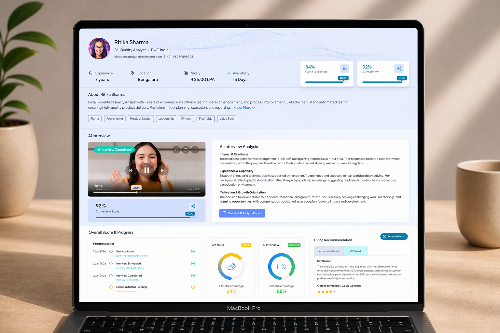
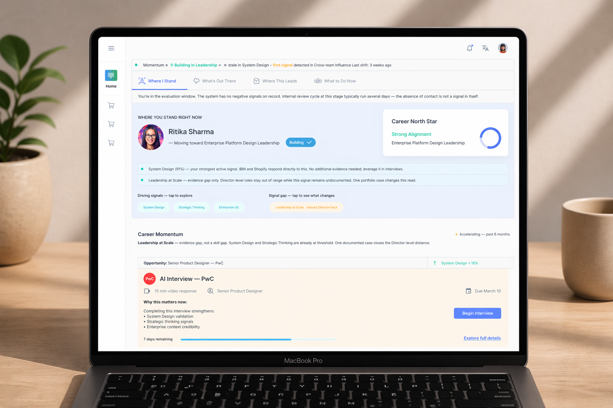
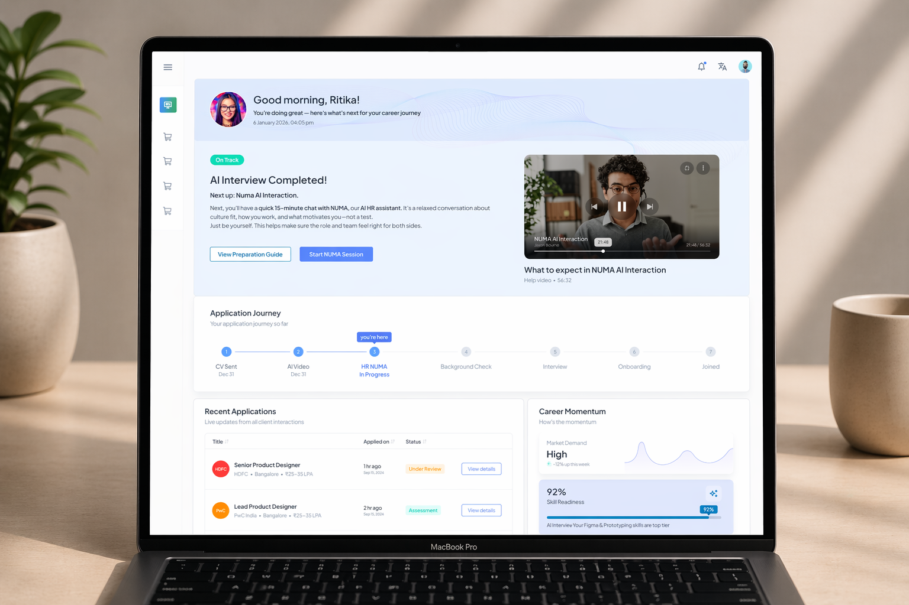
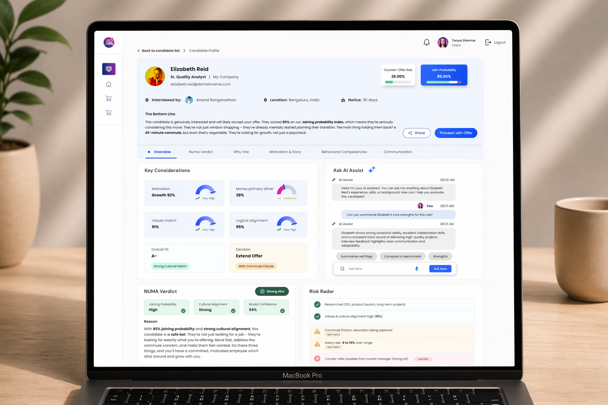

NCG Product · Career Intelligence · AI Design · 01/05
Hiring platforms have been solving the wrong problem for thirty years. They optimised the pipeline — faster, more organised, better filtered. What they didn't fix: the quality of the decision, and the dignity of the person it's made about.
Welocity is NCG's own hiring intelligence product. I led UX from the ground up — not from a brief, but from two questions asked in parallel: what would hiring look like if it was built around decision quality? What would career look like if it treated you as an agent with a trajectory?
The Brief
"Design a hiring platform that uses AI to improve recruiter efficiency and candidate experience."
That was the starting point. It was the wrong frame — and changing that frame became the first design decision.
Every existing hiring tool is built on two shared assumptions. First: hiring is a pipeline management problem. Second: the candidate's relationship with the platform ends when the decision is made.
Watch a recruiter work for an hour and the first assumption breaks immediately. They're slow not because the UI is inefficient. They're slow because every evaluation forces them to mentally reconstruct candidate quality from scratch. The profile is a data dump, not a decision surface. Every decision — even the tenth that day — starts from zero.
For candidates, the failure runs deeper. Job searching isn't a process problem — it's an identity and direction problem. No existing platform addresses that.
THE MOST CONSEQUENTIAL DESIGN GAP IN HIRING ISN'T IN THE PIPELINE — IT'S IN WHAT HAPPENS WHEN THE PIPELINE IS DONE WITH YOU.
Hiring is not a pipeline problem. It is a signal intelligence problem — for both sides.
For recruiters: the bottleneck is interpretation. Extracting meaning from capability, surfacing that understanding at the moment a decision needs to be made.
For candidates: the bottleneck is continuity. Understanding who you are, where you're going, what the gap is — regardless of whether you're in an active job search or not.
This reframe changed everything. Instead of designing a better ATS, we were designing an intelligence layer that serves both sides simultaneously — and never stops serving the candidate, even when a specific opportunity closes.
The most important structural decision in Welocity is the one you don't see in any single screen. Welocity is a dual system — hiring intelligence for recruiters, career intelligence for candidates — both running on the same signal fabric.
When candidate signals and recruiter evaluation signals are built on the same model, matching becomes meaningful rather than mechanical. And the candidate's signal landscape is always theirs — not just for this application, but for the arc.
Dual-system signal architecture
Hiring Intelligence
Recruiters · Profiles as decision surfaces · Octo as AI interpreter · Never ranks, always explains
Career Intelligence
Candidates · North Star · Career Compass · Career Galaxy · Active across full career arc
Decision 01
The default mental model for a candidate profile is a container. We broke that model.
The profile in Welocity is structured not to hold information but to support a specific cognitive task: evaluation at depth, quickly, with confidence. Signals are grouped by relevance to the role, not by category. The strongest evidence surfaces first. Gaps are visible — not hidden — because a recruiter who sees an unexplained gap can ask about it; one who doesn't makes a worse decision.
The constraint held through every iteration: no information should be on the profile because it was available. Every element should be there because it helps a recruiter make a better decision. Those are not the same thing.
Screen — Candidate Profile as Decision Surface (Recruiter View)

The profile is structured to support evaluation at depth, quickly. Signals grouped by relevance — strongest evidence (match scores, AI interview, signal table) surfaces first. Gaps and analysis are visible, not hidden.
Decision 02
The original direction was auto-ranking. I pushed back hard.
Auto-ranking hides its reasoning. Bias lives in the model. Accountability diffuses. Recruiters stop developing judgment — they start deferring to the score, which means the system's errors compound silently.
So Octo became an interpreter. Not: "here are your top five candidates." But: "here's what's strong in this profile, here's what's unclear, here's how to think about the gap."
The human stays in the decision seat. Octo increases the quality of what goes into that decision. That distinction is both an ethical position and a product differentiator. It's the one I'm most proud of holding ground on.
Every existing hiring platform has an implicit model: you are a job-seeker. Welocity rejects this entirely. The candidate is a person with a career — a trajectory that predates any specific application and continues long after it resolves.
Decision 03
Before anything else, the system needs to answer: where are you going?
Not "what jobs are available." Not "what are you qualified for right now." But: given your signal landscape, your strengths, your emerging capabilities — what is the coherent future you are building toward?
The North Star is not a job. It's a trajectory derived from your signals. Career Compass maps where you are. Career Galaxy shows what's possible. The North Star is what you orient toward. The design constraint: always earned by the data, never manufactured for comfort.
Decision 04
Career Galaxy replaces the job list — the most dehumanising interface in hiring — with an orbital model. Opportunities orbit the candidate, positioned by signal alignment and readiness. The closer an opportunity, the stronger the match and the higher the readiness.
The candidate is not a query running against a database. They are at the centre of a field, and the field is showing them where they stand relative to what's possible.
Screen — Career Journey (North Star · Compass · Galaxy)

The candidate is at the centre — not a query running against a database. North Star defines the trajectory. Career Compass maps current readiness. Galaxy shows where opportunities sit relative to that readiness, not as a flat list.
Screen — Candidate Dashboard (Transparency Tracker + Career Momentum)

The candidate's relationship with the system doesn't pause between actions. The Application Journey tracker shows exactly where they are. Recent Applications shows live status. Career Momentum shows trajectory signals — the system keeps working even when nothing is explicitly happening.
In every existing platform, rejection is an end state. Silence. In Welocity, rejection is a calibration moment. This required designing a specific protocol.
Screen — Candidate Overview (Recruiter View · Octo / AI Assist in action)

Octo interprets — it never decides. The NUMA Verdict section explains the reasoning (Joining Probability High, Cultural Alignment Strong, Model Confidence 94%) alongside what the recruiter should say, avoid, and do next. The AI Assist panel answers specific recruiter questions rather than producing a ranked list.
Dignity Protocol — the five-step rejection sequence
No Ghosting — System Constraint
Guaranteed, respectful communication. Non-negotiable. Not a feature.
Signal Landscape Update
System updates based on what evaluation revealed. Discrepancies become Exploration Signals.
Octo Interprets — Not Judges
"Your strongest signals are here. The gap was here. Here's how to think about it." Clarity, not verdict.
Galaxy Recalibrates
Opportunities reorganise around updated signal landscape. You see where you actually stand.
North Star Holds
Trajectory doesn't collapse because a single application did. Calibration, not verdict.
WE ARE NOT TRYING TO MAKE REJECTION FEEL GOOD. WE ARE TRYING TO REMOVE MEANINGLESSNESS FROM IT.
Between every candidate action — application submitted, interview done — the system goes silent. From the platform's view: processing state. From the candidate's view: anxiety, loss of control, disengagement.
I named this the missing state. Not a missing feature — a missing concept. The Transparency Tracker gives candidates signal visibility during evaluation. The absolute constraint: no fake progress bars, no manufactured optimism, no manipulative nudges. It had to be honest or it would erode trust worse than silence.
Design Principle
"Systems fail not where they act, but where they go silent."
−20%
Reduction in recruiter evaluation time — from profiles requiring less mental reconstruction, not faster UI.
+40%
Improvement in workflow completion — from flows designed around decision confidence, not task completion.
↓
Candidate drop-off during waiting phases reduced after the Transparency Tracker.
✦
Rejection described by early users as directional rather than discarding — the metric that mattered most.
Designing a system from scratch — not inheriting someone else's architecture — is a different kind of work. The temptation is to move fast to screens. The discipline is to stay in the system model long enough to get the architecture right, because screens built on a wrong model will fail no matter how well-designed they are.
THE SHAPE OF THE SYSTEM IS DEFINED AS MUCH BY WHAT WE REFUSED TO BUILD AS BY WHAT WE BUILT.
Next Project
RCMS — HPE — HPE